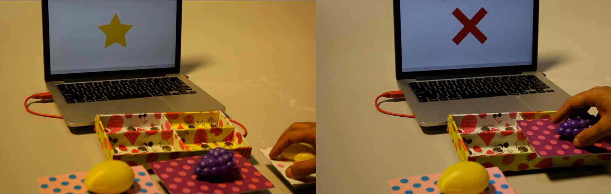
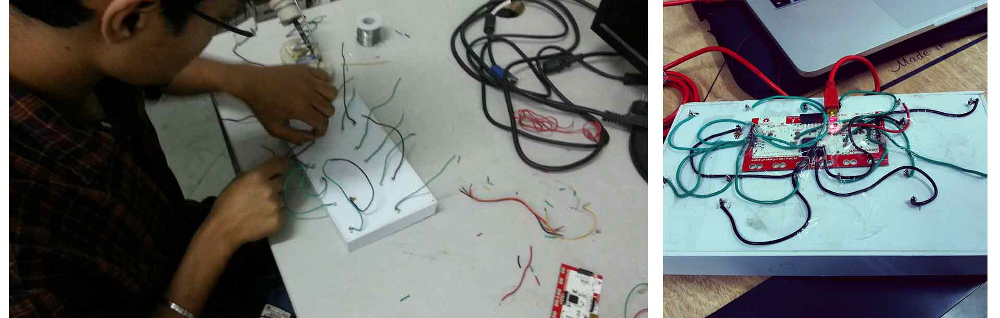

Tangible Interfaces, User Research and Evaluation
Tangify is Tangible Learning Toolkit that has been specially designed for specially abled children of age group of 3-7 years. The targeted solution mainly targets three disabilities including autism, cerebral palsy and ADHD. In the current system that we have designed, children can learn about different characteristics of a fruits by placing different tokens of the fruit in different compartments of the Tangify platform. Once a child places a particular fruit’s token in one of the section in the Tangify platform, an animated video will start playing telling about one of the features of that fruits which could be name, color, spelling or action. The animated video repeats multiple times and reduces the need for the teacher to do the same. We have also introduced a Tangify quizzing module wherein once a child has learnt about certain fruits he can answer the questions by placing the tokens on the Tangify platform. The system that we have designed is mainly aimed to reduce the work-load of the teachers of these children amounting from the continuous repetition of concepts.
We conducted ethnographic studies and contextual user research at Shishu Sarothi, which is a non-profit voluntary organisation for rehabilitation and training for multiple disabilities, located at Birubari, Guwahati. The interviews were open ended, guided by appropriate questionnaire and were conducted with 5 stakeholders including 1 executive director, 1 psychologist, and 3 instructors of playgroup.dd
The initial user research was conducted with the objective of understanding the domain. The later user research phase was focused on Playgroup with the main objectives of identify the various activities conducted along with the related methodology, objectives and issues involved in conducting those activities.
A total of 18 students are admitted to playground belong to the age group of 3-6 years who have basic cognitive development, physical development, language and communication skills, self-help skills and social and emotional skills. The objective of the class is to develop the student’s basic concepts, motor skills, language skills, social skills and self-help skills with the aim of promoting them to higher classes or conventional schools according to their abilities. Basic concepts include teaching the students identification of popular fruits and vegetables, body parts, shapes, colours etc. This is achieved as the instructor repeatedly presents the student with either a 3D model of the fruit or a flashcard along with repetitive verbal input about the name or color of the fruit. Another activity conducted is matching of first letter of name with picture of the fruit.
Various challenges are faced while conducting such activities, the most crucial being the requirement of extensive repetition from the instructor in order to teach identification of a single attribute of a fruit. Each student require to be individually attended by the instructor as each of them have different learning requirements and pace. The number of instructors being 3 and the number of students being 18, each student gets very less time of attention from the instructor leading to longer duration of learning. While a student is being attended by the instructor, all other students need to wait for their turn. A student learns about two fruits in a duration of 3 months with such an approach.
Looking at the amount of time spent, and the difficulty associated in the current way of handling the situation there was an urgent need of intervention to make the entire learning process much easier, engaging and aimed at improving learning curve and reducing teacher’s intervention as found out in the research.
The final design solution is a tangible product which aims at reducing the repetition required from the instructor in teaching the students along with making the learning process more efficient and engaging. The product is designed to teach the students some basic concepts about a few fruits. The intervention of the teacher in the learning process is minimised in order to tackle the challenge of high student-teacher ratio. It is significantly crucial in the given situation since the students have a considerably slow learning rate and require consistent repetition of the concept.
Specifically our team has selected to teach the concepts of name, colour, how to eat and how to draw three fruits namely Banana, Grapes and Mango.
The components of the system are(Figure 1):
Tangify Platform: base with four adjacent rectangular hollow compartments which are arranged in a rectangular orientation as shown.
Tangify Tokens: Three fruits, each of which are attached to hollow cuboids.
Tangify Display screen
FIGURE 1: Tangify Learning Toolkit
In the current system that we have designed, children can learn about different characteristics of a fruits by placing different tokens of the fruit in different compartments of the Tangify platform. Once a child places a particular fruit’s token in one of the four compartments, an animated video will start playing telling about one of the features of that fruits which could be name, color, spelling or action. The animated video repeats multiple times and reduces the need for the teacher to do the same
The design solution allows the user to repetitively interact with the product thus fulfilling his need of repetition of content for efficiently learning the concept. Also, the user is being engaged to some extent with the product making the learning process active which again enhances the learning of the student.
FIGURE 2: Tangify Platform with four compartments.
We have also introduced a Tangify quizzing module wherein once a child has learnt about certain fruits he can answer the questions by placing the tokens on the Tangify platform. We have made use of appraisals with engaging audios in the quizzing module to make the learning experience more interactive and entertaining for children. We have designed three quizzing rounds that aim to test different characteristic of a particular fruit such as shape, color, and spelling of a particular fruit.
FIGURE 3: Appraisals in form of stars and cross along with playful music while playing quizzes.
The design proposed was aimed to assist the children recognise simple fruits, shapes, and colours through tangible interactions. Following the concept generation, a high- fidelity prototyping was done using a Makey-Makey micro controller connected to a laptop. The TUI consists of a base compartmentalised to represent four different properties. The compartments are constrained to allow only one token, consisting of a fruit glued to a hollow rectangular block, to be placed on the base. Each token has a metal plate at its base, fitted in a particular orientation. Placing the token in a compartment completes a specific circuit of the Makey-Makey and sends the computer a keyboard message. The message is read by Processing, and a video on the particular characteristic of the fruit is displayed on the display screen. For creating tokens we have used 3d plastic mockups of fruits so that recognition of fruits become much more easier for children. We did not use images on the tokes because as identified during the user research it was identified that using 3D mockups to teach was much more effective rather than using 2d flash cards. Figure 4 shows the back soldering of the prototype using the Makey Makey micro controller
FIGURE 4: Prototyping of the toolkit using Makey Makey micro controller.
We conducted the first round of user testing at Shishu Sarothi with 8 kids belonging to the age group of 3-7. The prototype was put up in the classroom and children interacted with the system one by one and the entire process was assisted by a teacher whenever required, otherwise the children were given first hand demonstration and then allowed to interact with the system freely as per their own understanding.
The results of the user testing were quite encouraging as most of the kids were able to figure how the system is supposed to be used after first hand demonstration. The kids felt very happy to see the animations start on the screen whenever they placed a token on the Tangify platform. They were self motivated to keep interacting with the system without much assistance from the teacher. In the next stage of user testing we would test the prototype over a duration of two months to see if there is a improvement in the learning curve of the children.
FIGURE 4: Some photos from the first phase of user study conducted at Shishu Sarothi
Tangify is a tangible learning toolkit that is an interactive way to learn and test about various characteristics of the fruit specially designed for specially abled children of age group suffering from multiple intellectual disabilities. The problems targeted are continuos repetition of fruit names and properties vocally by teachers, and non engaging pedagogical framework for teaching kids daily used objects such as fruits and vegetables. The current system allows the kids to engage with the system on their own without much assistance from the teachers. Though teachers intervention cannot be completely reduced due to the severity of the problem but our system aims at reducing the the effort of the teacher while making the learning process much more playful and engaging for children.
After the first phase of user testing the results were encouraging and we will continue to test it across for a reasonable amount of time and see if there is any improvement in the learning curve of students through tangify. Currently the tangify platform is used to teach only about fruits, however, if successful it can be expanded to other daily objets such as vegetables, stationary, number, shapes etc.
We would like to thank Prof. Keyur Sorathia for his guidance and supporting us with desired resources during the course of this project. We would also like to thank Shishu Sarothi for allowing us to conduct a study at their premises.
Designed and Developed with by Rohan Vijay